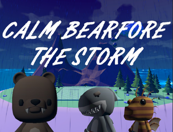

Hello! I'm Jordan, known online as 'Shocking'!
I am a passionate programmer and game developer who has been creating games for over a decade. I have a huge passion for video games which has developed into a burning desire to produce experiences of my own.
I am currently a BSC Computer Science student working towards a degree, producing hobby projects and games in my spare time.
I have large amounts of experience within Unity and Unreal aswell as being familiar with the Raylib and OpenGL libraries, with my strongest programming languages being C#, C++ and Python.
Check out my projects below!
-

Eggscape
-
RTS Automated
-
Raylib Tetris
-

Calm Before The Storm
-

Cirque Animalier
-
Scope Of Practice
-
Undead Rancher